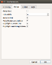

qtpovrayConfigure editor | December 12, 2017 |

{kind=link}
This tab allows you to customize the look and feel of the editor.
- Wrap text - When unchecked, the text of your long lines will go beyond the edge of the window. When checked, the extra text will wrap to the next line.
- Tab width - Specifies how many characters to make each tab stop. Qtpov preserves tabs; there is no provision to convert tabs to spaces.
- Auto indent - When checked, the
Enterkey will indent the next/new line to be underneath the first character of the previous line. - Auto Brace completion When checked, when you type a '
{', the corresponding '}' is also inserted and the cursor is placed between the characters.
If you then typeEnter>key, two lines are created; the '}' is moved two lines down and indented, the cursor is then moved up to the blank line and indented one tab stop. - Highlight current line - Draws a yellow background for the currently edited line.
- Highlight matching tokens - When you select text, like
MyClock, all other instances of that text are drawn with a salmon background.